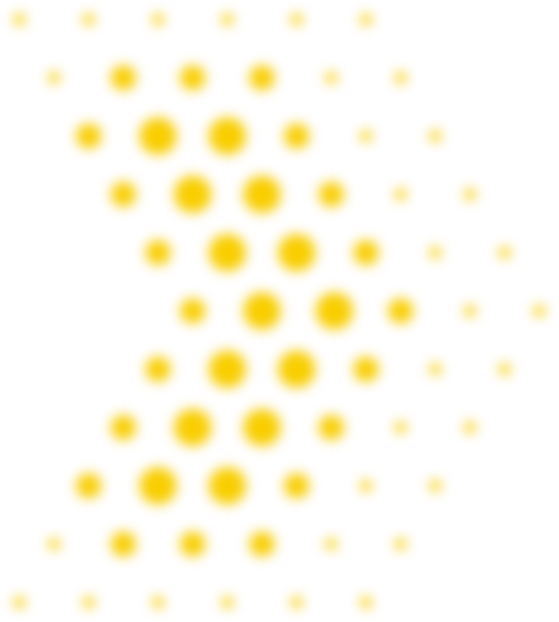
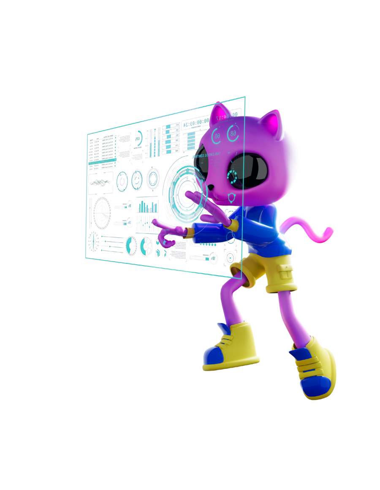
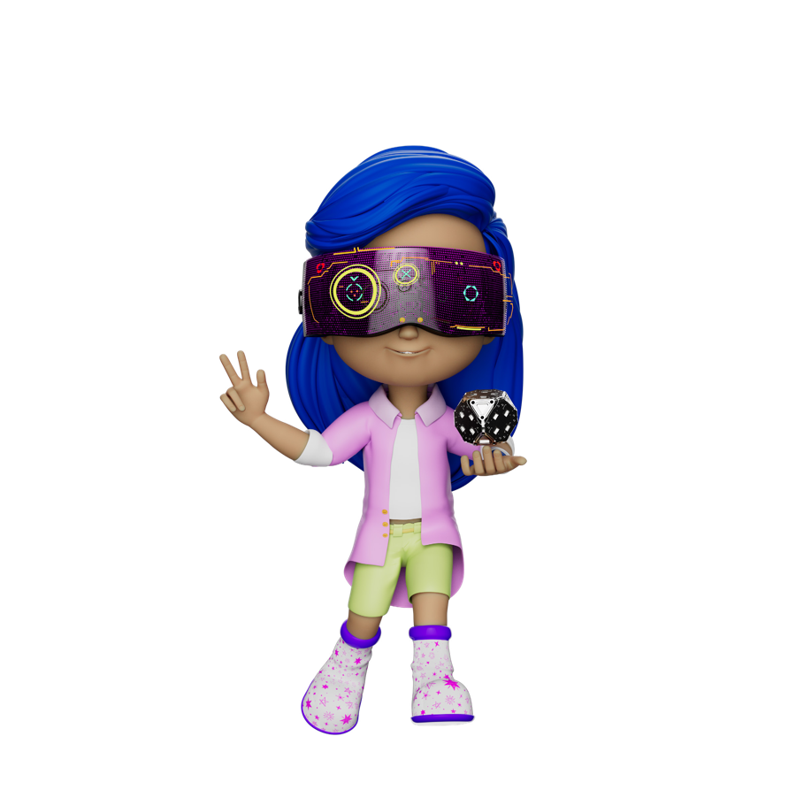
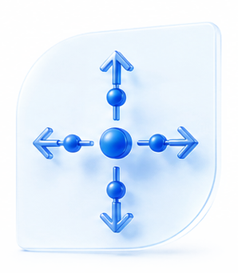

Sentando las bases
Reducción de la brecha de acceso a infraestructura y conectividad.
- 0 instituciones conectadas a Internet
- 0 equipos computacionales entregados
Próximo lanzamiento · MINEDEC
La educación ecuatoriana está por conectarse



Una nueva hoja de ruta
La Agenda Educativa Digital es el instrumento que orientará la transformación digital de la educación en el Ecuador: traza el camino para que toda la comunidad aprenda acerca y mediante herramientas tecnológicas en entornos digitales.
No partimos desde cero
Cada agenda construyó sobre la anterior. La tercera llega para acelerar la transformación.
Reducción de la brecha de acceso a infraestructura y conectividad.
Competencias y Ciudadanía Digital como respuesta a los desafíos de la pandemia.
Una hoja de ruta que trasciende periodos administrativos, con sostenibilidad, inclusión y pertinencia.
Cinco ejes estratégicos
Toca cada eje para descubrir hacia dónde nos lleva.

Algunas estrategias que llegan:
Un adelanto
Formación, certificación por niveles de dominio y rutas personalizadas para cada docente.
Y programación en HTML, JavaScript y Python para entornos web, móvil y escritorio.
Fibra óptica, satélite y redes móviles para llegar a zonas de difícil acceso.
Del laboratorio de computación a espacios de aprendizaje colaborativo con tecnologías emergentes.
Recursos certificados, adaptados a contextos rurales y en lenguas ancestrales, con búsqueda y recomendación inteligente.
Lineamientos para su integración pedagógica ética, crítica y responsable.
Prevención del ciberacoso, bienestar digital, salud mental y pensamiento crítico.
Decisiones basadas en evidencia, buenas prácticas sistematizadas, ferias, congresos y hackáthones.
Acompañamiento técnico-pedagógico y redes de soporte en territorio.
Un nuevo modelo con productos educomunicacionales en múltiples formatos y plataformas.
Rumbo al 2030
De dónde partimos y hacia dónde vamos.
Hoy 66,6 % de las instituciones fiscales tienen Internet (8.245 de 12.377).
Y al menos 60 % de estudiantes. La línea base nace con la evaluación nacional 2026.
Hoy más de 2.000 recursos, 13 millones de visitas y 3 millones de descargas.
Participando en iniciativas de innovación educativa digital del ecosistema nacional.
Y un nivel de madurez 4 de 5 en gobernanza digital educativa.
Palabras del futuro
La Agenda trae su propio glosario. Pon a prueba lo que sabes: gira cada tarjeta.
Cuenta regresiva
Comparte la expectativa con tu comunidad educativa y mantente atento a los canales oficiales del Ministerio de Educación, Deporte y Cultura.